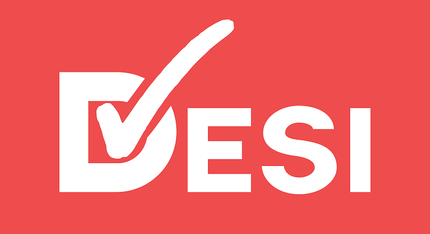

A free, social, gamified task tracker for iPhone

At its core, Desi is a task tracker. It allows it users to manage their tasks within a group and keep track of who is assigned to what task.
The unique points-based system built into Desi gamifies the task tracking experience for users. This creates more incentive for task completions and allows for easier performance tracking than other task trackers.
By integrating with the Facebook API and SDK, users can easily login into Desi then make groups and track tasks with anyone on their Facebook friends list.